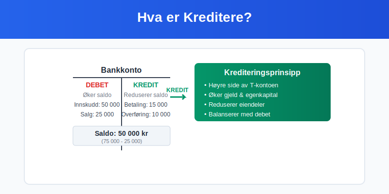
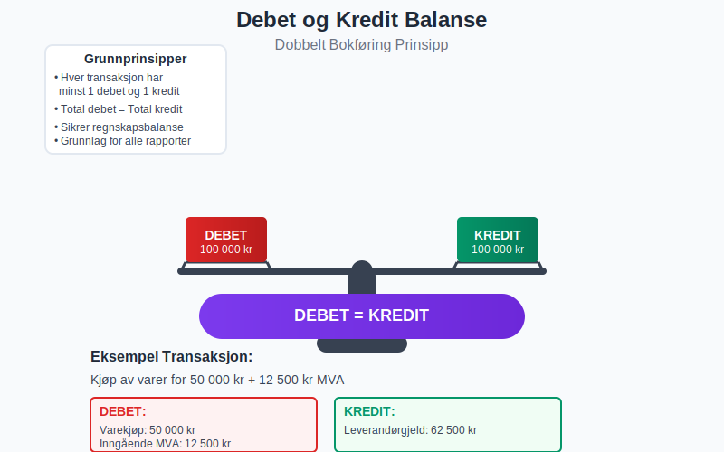
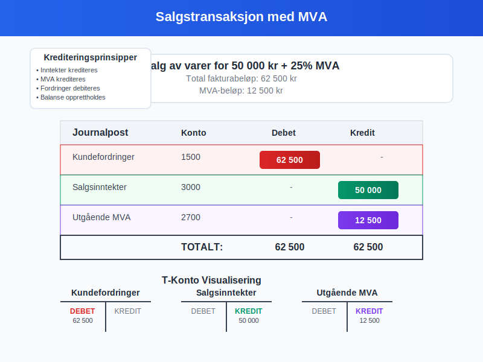
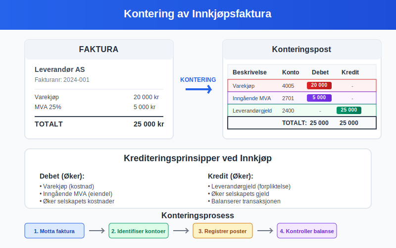
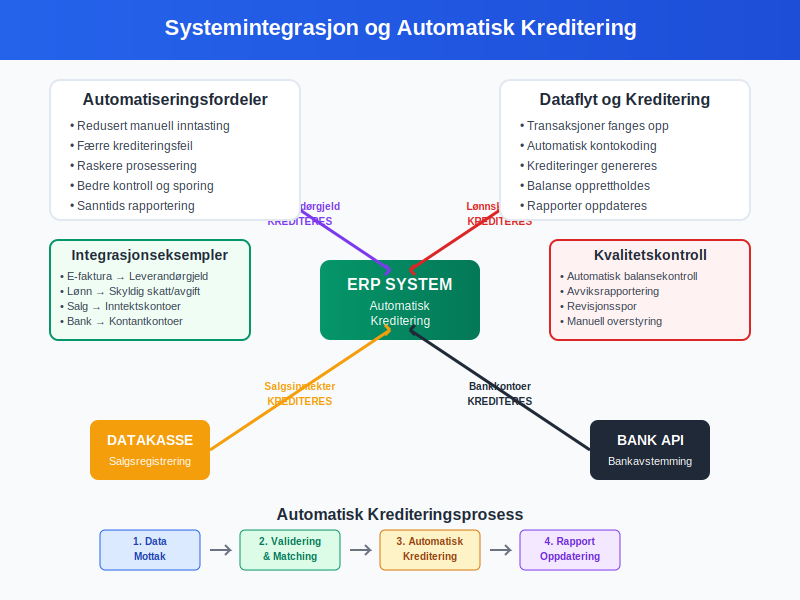
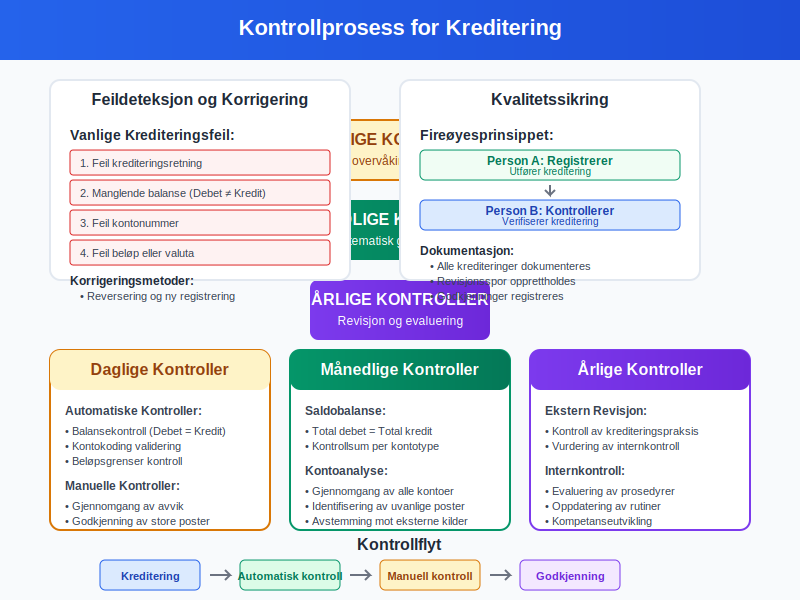
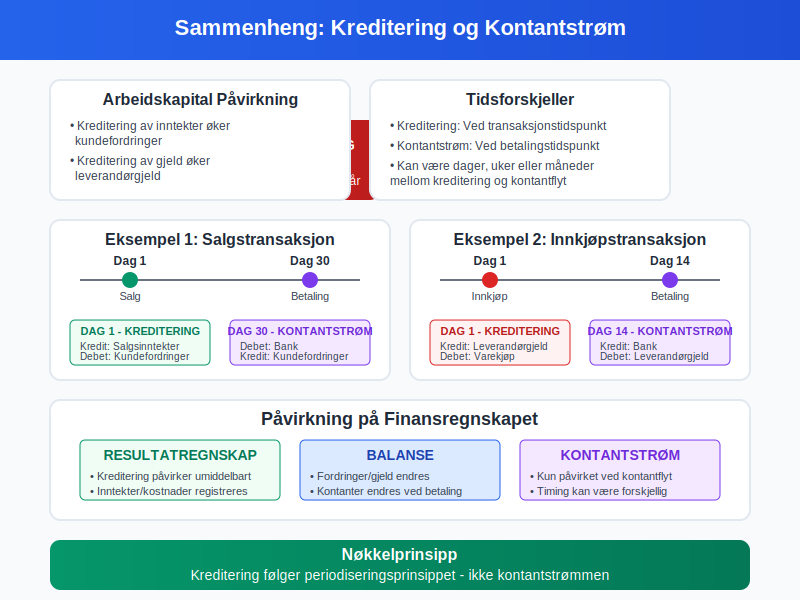

Kreditere er en fundamental handling i dobbelt bokføring som innebærer å registrere et beløp på høyre side av en konto. Sammen med debet utgjør kreditering grunnlaget for all systematisk bokføring og kontering.
Kreditering er ikke bare en teknisk prosess, men en kritisk komponent som sikrer at regnskapsligningen alltid balanserer og at finansiell rapportering følger god regnskapsskikk.
For mer informasjon om teknisk utførelse av debitere kontoer, se Debitere.

Grunnleggende Prinsipper for Kreditering
Etymologi og Historisk Bakgrunn
Begrepet “kredit” kommer fra det latinske ordet credere, som betyr “å tro” eller “å betro”. Dette reflekterer den historiske tilliten som var nødvendig i handelstransaksjoner hvor varer ble levert før betaling ble mottatt.
Krediteringens Rolle i Dobbelt Bokføring
I dobbelt bokføring må hver transaksjon registreres med minst én debet og én kredit, hvor den totale debetsummen alltid må være lik den totale kreditsummen. Dette sikrer at regnskapsligningen (Eiendeler = Gjeld + Egenkapital) alltid balanserer.

Krediteringsregler for Ulike Kontotyper
Forståelsen av når og hvordan man krediterer ulike kontotyper er avgjørende for korrekt bokføring. Reglene varierer basert på kontotypen:
Tabell: Krediteringsregler per Kontotype
| Kontotype | Kreditering Øker | Kreditering Reduserer | Eksempler |
|---|---|---|---|
| Eiendeler | Nei | Ja | Bankinnskudd, varelager, maskiner |
| Gjeld | Ja | Nei | Leverandørgjeld, banklån, skyldige skatter |
| Egenkapital | Ja | Nei | Aksjekapital, opptjent egenkapital |
| Inntekter | Ja | Nei | Salgsinntekter, renteinntekter |
| Kostnader | Nei | Ja | Lønn, husleie, driftskostnader |
Detaljerte Krediteringsregler
1. Kreditering av Eiendelskontoer
Når du krediterer en eiendelskonto, reduserer du eiendelens verdi. Dette skjer typisk når:
- Kontanter brukes til å betale regninger
- Varelager selges til kunder
- Avskrivning reduserer verdien av anleggsmidler
Eksempel: Betaling av leverandørfaktura på 10 000 kr
Debet: Leverandørgjeld 10 000 kr
Kredit: Bankkonto 10 000 kr
2. Kreditering av Gjeldskontoer
Kreditering av gjeldskontoer øker gjeldsbeløpet. Dette skjer når:
- Nye lån tas opp
- Fakturaer mottas fra leverandører
- Påløpte kostnader registreres
Eksempel: Mottak av leverandørfaktura på 15 000 kr
Debet: Varekjøp 15 000 kr
Kredit: Leverandørgjeld 15 000 kr
3. Kreditering av Egenkapitalkontoer
Kreditering av egenkapitalkontoer øker egenkapitalen. Dette inkluderer:
- Innskudd av ny aksjekapital
- Tilbakeholdt overskudd
- Kapitalinnskudd
4. Kreditering av Inntektskontoer
Inntektskontoer krediteres når inntekter opptjenes. Dette følger periodiseringsprinsippet i god regnskapsskikk.
Eksempel: Salg av varer for 25 000 kr
Debet: Kundefordringer 25 000 kr
Kredit: Salgsinntekter 25 000 kr
Praktiske Eksempler på Kreditering
Eksempel 1: Komplett Salgstransaksjon
En bedrift selger varer for 50 000 kr (ekskl. mva) med 25% mva:

Debet: Kundefordringer 62 500 kr
Kredit: Salgsinntekter 50 000 kr
Kredit: Utgående MVA 12 500 kr
Eksempel 2: Lønnsutbetaling
Utbetaling av lønn på 40 000 kr med forskuddstrekk på 8 000 kr:
Debet: Lønnskostnad 40 000 kr
Kredit: Skyldig forskuddstrekk 8 000 kr
Kredit: Bankkonto 32 000 kr
Eksempel 3: Avskrivning av Anleggsmidler
Månedlig avskrivning av maskiner på 5 000 kr:
Debet: Avskrivningskostnad 5 000 kr
Kredit: Akkumulerte avskrivninger 5 000 kr
Kreditering og Kontering
Kontering er prosessen med å tildele riktig kontonummer til hver debet- og kreditpostering. Korrekt kontering sikrer at krediteringer registreres på riktige kontoer i kontoplanen.
Konteringseksempel med Kreditering
For en innkjøpsfaktura på 20 000 kr + 5 000 kr mva:

| Beskrivelse | Kontonummer | Debet | Kredit |
|---|---|---|---|
| Varekjøp | 4005 | 20 000 | - |
| Inngående MVA | 2701 | 5 000 | - |
| Leverandørgjeld | 2400 | - | 25 000 |
Vanlige Feil ved Kreditering
1. Feil Krediteringsretning
Problem: Kreditere en eiendelskonto når den skulle økes Løsning: Husk at eiendeler øker med debet, ikke kredit
2. Manglende Balanse
Problem: Total debet ≠ total kredit Løsning: Bruk avstemming for å identifisere ubalanser
3. Feil Kontering
Problem: Kreditere feil konto Løsning: Følg systematisk kontoplan og kontroller
Kreditering i Moderne Regnskapssystemer
Automatisk Kreditering
Moderne ERP-systemer automatiserer mange krediteringsprosesser:
- Automatisk MVA-beregning: Systemet krediterer automatisk MVA-kontoer
- Periodisering: Automatisk kreditering av påløpte kostnader
- Bankavstemming: Automatisk matching og kreditering
Integrasjon med Eksterne Systemer

- E-faktura: Automatisk kreditering av leverandørgjeld
- Lønnssystemer: Automatisk kreditering av lønnsrelaterte kontoer
- Datakasse: Automatisk kreditering av salgsinntekter
Kreditering og Finansiell Rapportering
Påvirkning på Finansregnskapet
Korrekt kreditering påvirker direkte finansregnskapet:
Resultatregnskap
- Kreditering av inntektskontoer øker totale inntekter
- Kreditering av kostnadskontoer reduserer totale kostnader
Balanse
- Kreditering av gjeldskontoer øker total gjeld
- Kreditering av egenkapitalkontoer øker total egenkapital
- Kreditering av eiendelskontoer reduserer totale eiendeler
Kontroll og Kvalitetssikring

Månedlige Kontroller
- Saldobalanse: Verifiser at total debet = total kredit
- Kontoanalyse: Gjennomgå alle krediteringer per konto
- Avstemming: Sammenlign med eksterne kilder
Årlige Kontroller
- Revisjon: Ekstern kontroll av krediteringspraksis
- Internkontroll: Evaluering av krediteringsprosedyrer
Kreditering i Spesielle Situasjoner
1. Valutakursdifferanser
Ved transaksjoner i utenlandsk valuta kan det oppstå kursdifferanser som krever spesiell krediteringsbehandling:
Debet: Kundefordringer (NOK) 105 000 kr
Kredit: Salgsinntekter (NOK) 100 000 kr
Kredit: Kursgevinst 5 000 kr
2. Kreditnotaer
Når kreditnotaer utstedes, reverseres den opprinnelige krediteringen:
Opprinnelig salg:
Debet: Kundefordringer 25 000 kr
Kredit: Salgsinntekter 25 000 kr
Kreditnota:
Debet: Salgsinntekter 25 000 kr
Kredit: Kundefordringer 25 000 kr
3. Avsetninger og Estimater
Kreditering av avsetningskontoer for fremtidige forpliktelser:
Debet: Avsetningskostnad 50 000 kr
Kredit: Avsetning for garanti 50 000 kr
Beste Praksis for Kreditering
1. Systematisk Tilnærming
- Bruk standardiserte prosedyrer for alle krediteringer
- Dokumenter alle transaksjoner med tilstrekkelige bilag
- Følg bokføringsloven og bokføringsforskriften
2. Kvalitetskontroll
- Dobbeltsjekk alle krediteringer før registrering
- Utfør regelmessige avstemminger av alle kontoer
- Implementer fireøyesprinsippet for større transaksjoner
3. Teknologisk Støtte
- Bruk moderne regnskapssystemer med innebygde kontroller
- Automatiser rutinekrediteringer hvor mulig
- Implementer elektronisk bilagsbehandling
Sammenheng med Andre Regnskapskonsepter
Kreditering og Periodisering
Kreditering følger periodiseringsprinsippet, hvor transaksjoner registreres når de oppstår, ikke nødvendigvis når kontanter utveksles. Dette er fundamentalt for god regnskapsskikk.
Kreditering og Kontantstrøm
Mens kreditering påvirker resultatregnskapet, påvirker det ikke nødvendigvis kontantstrømmen samtidig.

Konklusjon
Kreditering er en fundamental komponent i dobbelt bokføring som sikrer nøyaktig og balansert regnskapsføring. Forståelse av krediteringsprinsipper, kombinert med korrekt kontering, er avgjørende for å opprettholde god regnskapsskikk og produsere pålitelige finansielle rapporter.
Ved å følge systematiske prosedyrer, implementere kvalitetskontroller og utnytte moderne teknologi, kan bedrifter sikre at deres krediteringspraksis støtter både daglig drift og langsiktig finansiell planlegging.